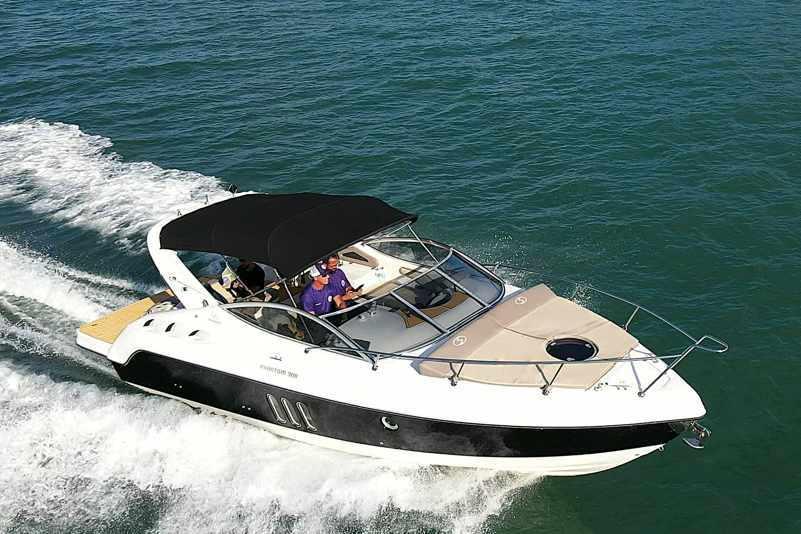
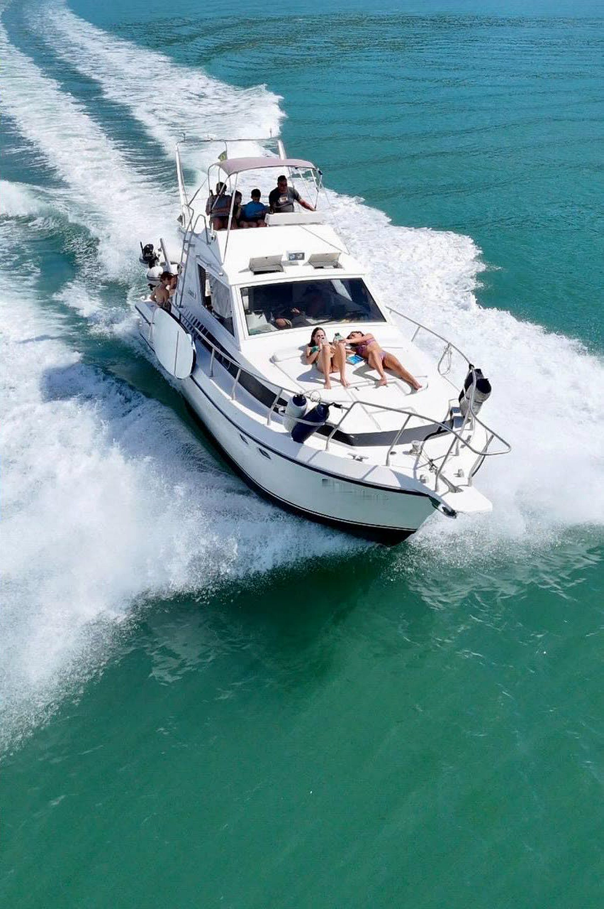
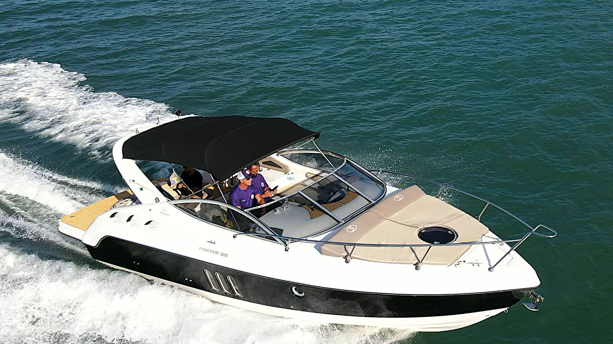
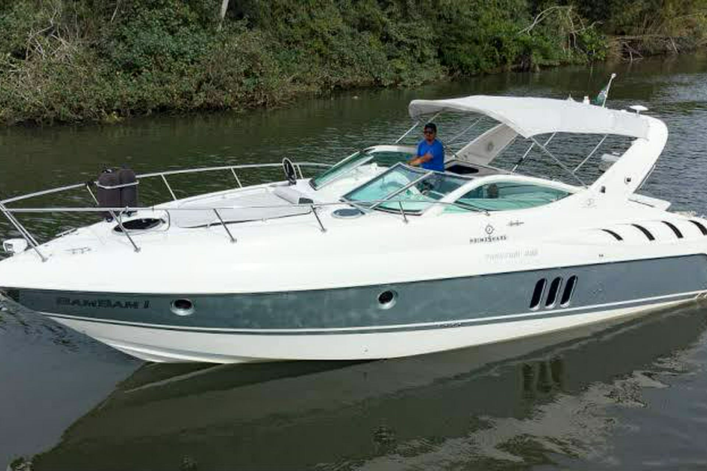
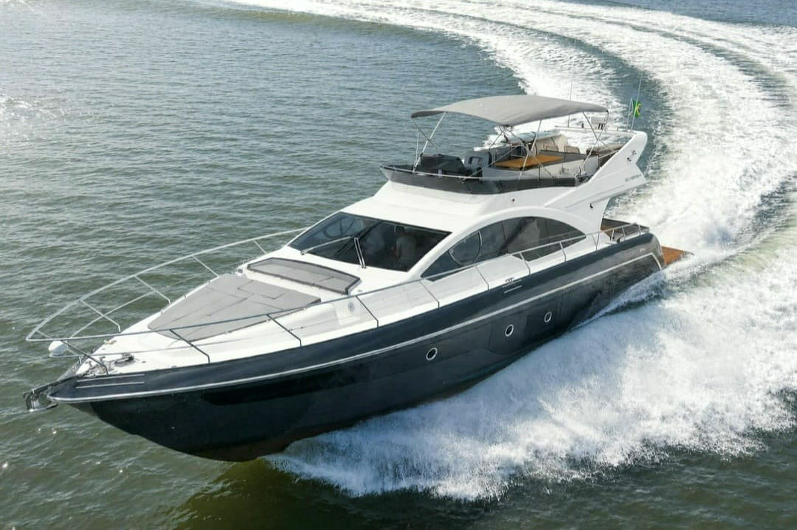
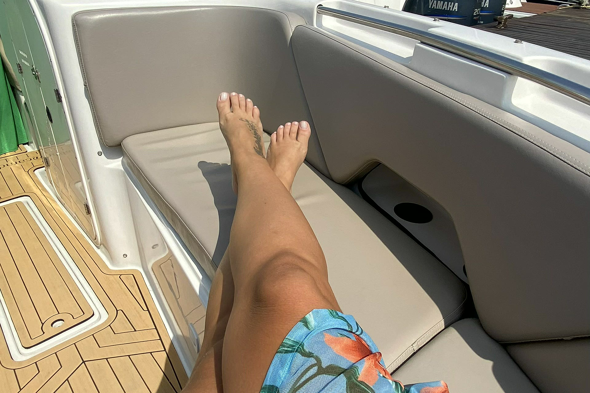
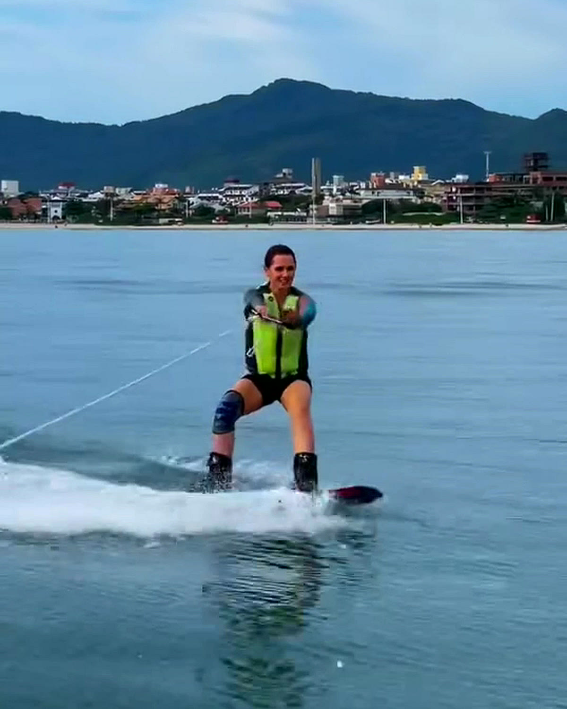

Schaefer Phantom 300
Solário de proa amplo, piso em teca, som Bluetooth e churrasqueira.
Escolher Phantom 300
Lanchas privativas saindo de Jurerê com churrasco a bordo e roteiros exclusivos.

Conhecimento real de cada enseada, banco de areia e condição de vento para a sua turma curtir Jurerê e as ilhas com segurança total.

Solário de proa amplo, piso em teca, som Bluetooth e churrasqueira.
Escolher Phantom 300
Cabine completa com banheiro, área gourmet na popa e máximo conforto.
Escolher 36 PésÁgil e perfeita para famílias, casais e esportes náuticos em Jurerê.
Escolher Singular 280
Dois andares, salão climatizado e espaço premium para festas e eventos.
Escolher Iate 56

Experiência impecável! O Xandão conhece cada canto de Jurerê e da Ilha do Francês. Lancha super limpa e churrasco nota 10.Rafael M.
Melhor passeio de lancha de Florianópolis! Segurança total para as crianças e atendimento de primeira do início ao fim.Camila S.
Comemoramos aniversário a bordo na Ilha do Francês e foi inesquecível. Recomendo de olhos fechados!Henrique T.
Marinheiro habilitado, combustível do roteiro combinado, churrasqueira náutica, cooler com gelo, som Bluetooth e todos os equipamentos de salvatagem.
Sim! Vocês podem levar as bebidas e carnes de sua preferência e o marinheiro prepara o churrasco a bordo enquanto vocês aproveitam o mar.
A segurança vem sempre em primeiro lugar. Caso o tempo ou o mar não permitam a saída, reagendamos seu passeio sem burocracia.